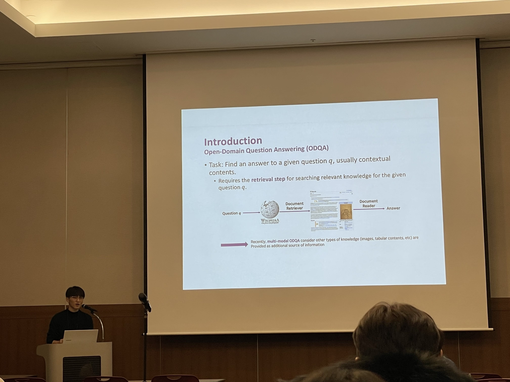

Eunhwan Park
박은환 · 朴殷煥
I am a Ph.D. student in the NLP & AI Lab at Korea University, advised by Prof. Heuiseok Lim. I received my M.S. in Computer Science from Jeonbuk National University, where I was advised by Prof. Seung-Hoon Na, and my B.S. in Computer Science from Kookmin University.

Education
- Korea University
Ph.D. Student in Computer Science
Advisor: Prof. Heuiseok Lim - Jeonbuk National University
M.S. in Computer Science
Advisor: Prof. Seung-Hoon Na - Kookmin University
B.S. in Computer Science
Experience
- Moreh / Motif Technologies
AI Research Engineer
Motif Technologies is a subsidiary of Moreh. - Buzzni
AI Research Engineer - Naver
Internship - Software Maestro 6th
Mentee
Research
I am interested in mechanistic understanding of neural networks, agentic AI, and foundation models. My recent work focuses on targeted neuron manipulation, short- and long-term memory augmentation for agents, and the full pipeline from pre-training to post-training.
Selected Publications
* Equal contribution · † Corresponding author
-
Ask, Assess, and Refine: Rectifying Factual Consistency and Hallucination in LLMs with Metric-Guided Feedback Learning
Dongyub Lee*, Eunhwan Park*, Hodong Lee, Heuiseok Lim†
Proceedings of EACL 2024 · pdf
-
MERLIN: Multimodal Embedding Refinement via LLM-based Iterative Navigation for Text-Video Retrieval-Rerank Pipeline
Donghoon Han*, Eunhwan Park*, Gisang Lee*, Adam Lee, Nojun Kwak†
EMNLP 2024 Industry Track · pdf
-
SISER: Semantic-Infused Selective Graph Reasoning for Fact Verification
Eunhwan Park*, Jong-Hyeon Lee*, Donghyeon Jeon, Seonhoon Kim, Inho Kang, Seung-Hoon Na†
Proceedings of COLING 2022 · pdf
-
Unleash the Potential of CLIP for Video Highlight Detection
Donghoon Han*, Seunghyeon Seo*, Eunhwan Park, Seong-Uk Nam, Nojun Kwak†
arXiv Preprint · pdf
-
MAFiD: Moving Average Equipped Fusion-in-Decoder for Question Answering over Tabular and Textual Data
Sung-Min Lee, Eunhwan Park, Daeryong Seo, Donghyeon Jeon, Inho Kang, Seung-Hoon Na†
Proceedings of EACL Findings 2023 · pdf
Professional Service
- Reviewer
ACL Rolling Review - Reviewer
AAAI 2026 Program Committee